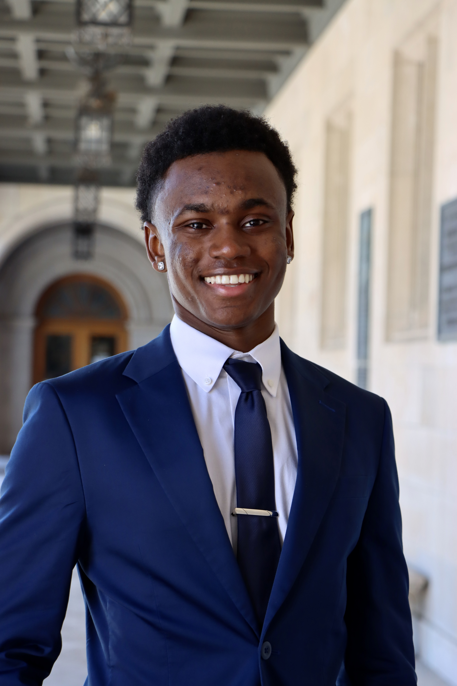

Hi! I'm Izzy Mbatai.
I’m a sophomore at Washington University in St. Louis from Seattle, Washington. I’m currently studying Business and Computer Science in the joint degree program between the Olin Business School and McKelvey School of Engineering. I am a Varsity Football athlete, a John B. Ervin scholar, and the 2025 Dean James E. McLeod First-Year Writing Prize winner. On campus, I am involved with RIZE Magazine, Black Anthology, the Association of Black Students, Washington University Black Letterwinning Athletes Coalition, and the African Student Association. I’m a multifaceted thinker with passions spanning software development, business strategy, and sports analytics. On the field and in the classroom, I bring discipline, creativity, and a collaborative spirit to every challenge.
Contact Me